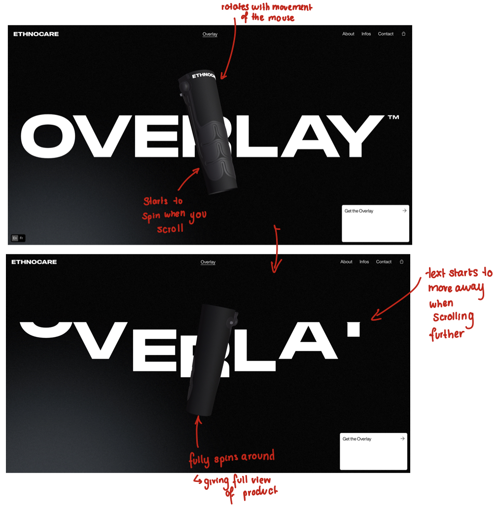
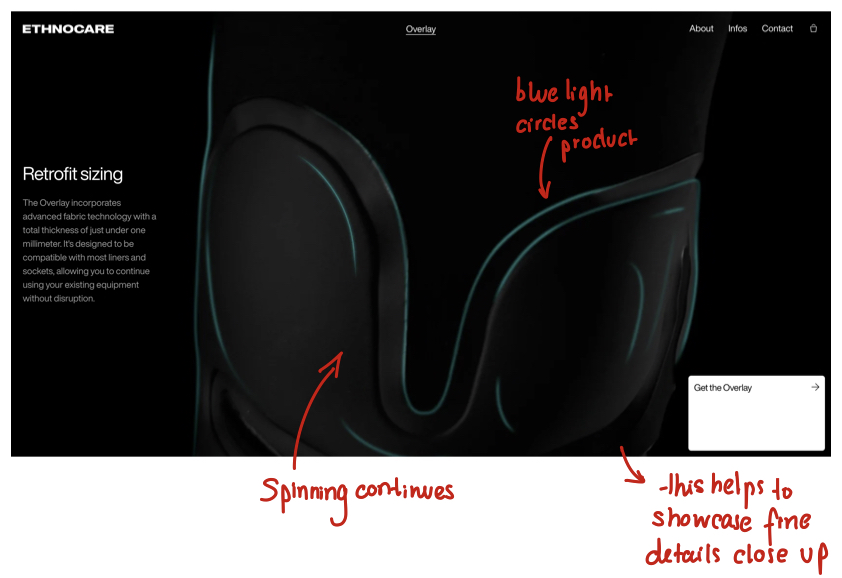
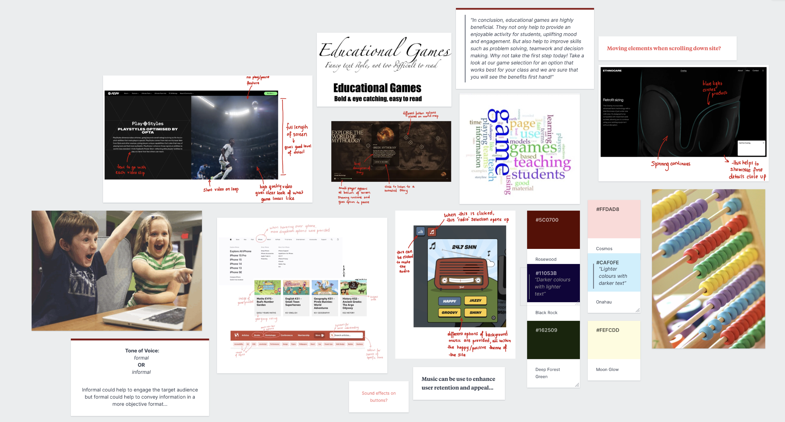

What are the videos used for?
The videos are used while scrolling down the page to show clips from the FC24 game to advertise it.
Can you find evidence of video used with intent, which enhances information comprehension, retention and appeal?
The videos on the site are used with the intent of advertising the game. This enhances information comprehension as the site talks about features/highlights of the game
and these are then displayed through small video clips as you scroll past the information.
This addition of video definitely enhances the retention and appeal of the site as it is interesting to watch. It also makes the site more interactive
as users have to keep scrolling to see more of the game clips.
What benefits and caveats of video use can you witness?
The most obvious benefit is that it helps to interest users in the game. By having these small clips to scroll through it shows off nice features and
helps to interest users in the game.
Is the length of videos suitable?
Yes, the length of the videos are suitable as they are only short clips, all under 10 seconds.
How is video combined with other media (images, text, audio) in order to synthesise a multimedia production?
The videos are used around text. The page starts off with a small blurb and then as you scroll you get a small video clip that demonstrates this feature.
Once the clip has finished playing, it ends on the last frame of the clip and uses this as the background to display the next bit of text.
What are the videos used for?
The videos are used to advertise their product - an overlay for prosthetics.
Can you find evidence of video used with intent, which enhances information comprehension, retention and appeal?
Much like website 1, the videos are used with intent to advertise features and positives of their product. This does help with information comprehension
as each clip helps to give a visual view of different parts of the overlay. For example, when talking about how the produce can be used with a range of
different types of prosthetic items, when you continue scrolling it plays a clip of a camera circling round different prosthetics using their overlay
product.
What benefits and caveats of video use can you witness?
A benefit of the video on this site is that it helps to show their product well visually. It provides more immersion than just looking at a photo of it.
By using the video to show the overlay, it allows the users to see a full render of the product rather than simply looking at pictures taken from different
angles.
A caveat would potentially be the fact you have to continuously scroll to keep the clips playing. Rather than just scrolling and then being able to watch
the clip, you have to keep scrolling to get through it. This might not be inclusive for those who have difficulty moving their fingers to scroll.
Is the length of videos suitable?
Yes, the length of the videos are very short just giving a short views of the game.
How is video combined with other media (images, text, audio) in order to synthesise a multimedia production?
The videos are paired with small bits of text. This helps to further explain the overlay that is being shown in the clips.


Moodboard:

Labwork
Task 1
Video of Kids on Computers:
Original video - 1080p:
1080p:
720p:
480p:
When comparing the video quality, I would prefer to go for 1080p for a video like this.
While it's a larger file size, the image quality is a lot better when comparing it to both the 720p and 480p.
You can see when looking at the text on the videos, it is very clear in 1080p, a little fuzzy on the edges in 720p and then blurry in 480p.
I could use 720p for the video, but I think it is better to use 1080p when there is text included in the video.
There is currently no audio on the clips. I think it would be good to add some background music or ambiance to see if this adds anything to the
video. It might be more interesting to look at with some sound in the background.
I used iMovie to edit this clip and save the different qualities. I found this quite easy to do, there were a lot of different options for styles of text.
You can also select different colours and transitions for the text.
I think including a video like in my website would be good. It helps to convey an idea across to the user with minimal text. As mentioned, I think it could
be improved with some ambiance or music.